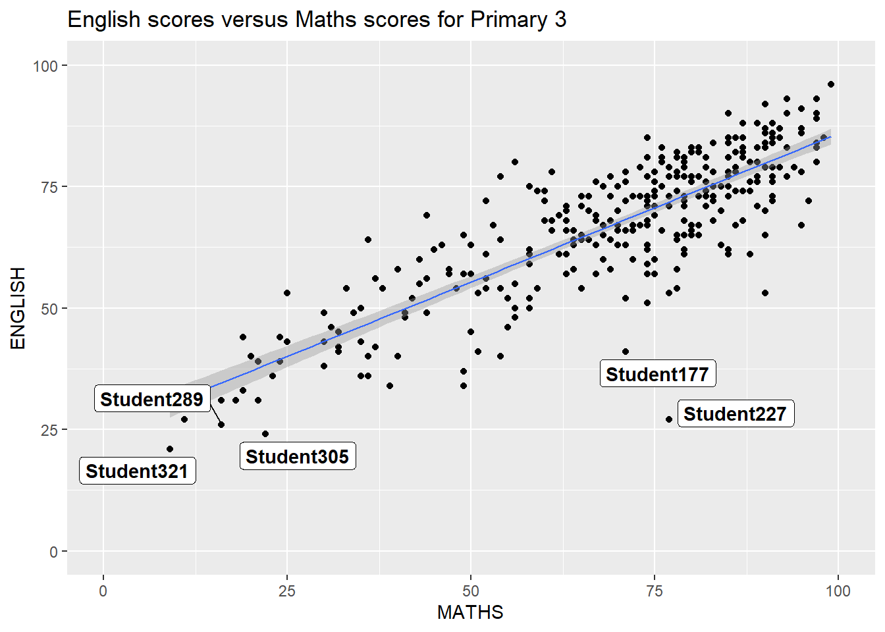
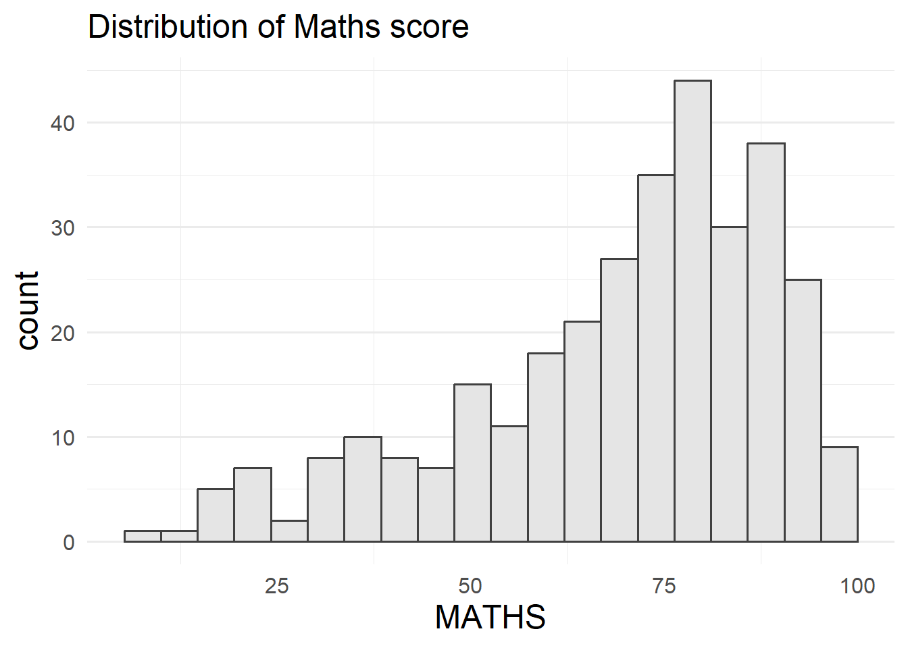

pacman::p_load(ggrepel, patchwork, ggthemes, tidyverse)Hands-on Exercise 2
Lesson 2: Beyond ggplot2 Fundamentals
1.0 Getting Started
In this chapter, several ggplot2 extensions will be introduced to create more elegant and effective statistical graphics.
In this exercise, beside tidyverse, four R packages will be used. They are: - ggrepel: an R package provides geoms for ggplot2 to repel overlapping text labels. - ggthemes: an R package provides some extra themes, geoms, and scales for ‘ggplot2’. - hrbrthemes: an R package provides typography-centric themes and theme components for ggplot2. - patchwork: an R package for preparing composite figure created using ggplot2.
Code chunk below will be used to check if these packages have been installed and also will load them onto your working R environment.
hrbrtheme will not be loaded because it is not available. Will use ggplot2 to replace it. Link: https://cran.r-project.org/web/packages/hrbrthemes/index.html
2.0 The Data
Loading the data to the R environment by using read_csv() function of readr package
exam_data <- read_csv("chap02/data/Exam_data.csv")The data in the file includes (1)Year end examination grades of a cohort of primary 3 students from a local school. (2) There are a total of seven attributes. Four of them are categorical data type and the other three are in continuous data type. The categorical attributes are: ID, CLASS, GENDER and RACE. The continuous attributes are: MATHS, ENGLISH and SCIENCE.
3.0 Visualization
3.1 Without GGrepel
ggplot(data=exam_data, aes(x=MATHS, y=ENGLISH)) + geom_point() + geom_smooth(method=lm, size=0.5) + geom_label(aes(label=ID), hjust=.5, vjust=-.5) + coord_cartesian(xlim=c(0,100), ylim=c(0,100)) + ggtitle("English scores versus Maths scores for Primary 3")
3.2 With GGrepel
ggplot(data=exam_data, aes(x=MATHS, y=ENGLISH)) + geom_point() + geom_smooth(method=lm, size=0.5) + geom_label_repel(aes(label=ID), fontface="bold") + coord_cartesian(xlim=c(0,100), ylim=c(0,100)) + ggtitle("English scores versus Maths scores for Primary 3")
3.3 Using GGplot2 theme
ggplot2 comes with eight built-in themes, they are: theme_gray(), theme_bw(), theme_classic(), theme_dark(), theme_light(), theme_linedraw(), theme_minimal(), and theme_void().
ggplot(data=exam_data, aes(x=MATHS)) + geom_histogram(bins=20, boundary=100, color="grey25", fill="grey90") + theme_gray() + ggtitle("Distribution of Maths score")
3.3.1 Using theme_economist()
ggplot(data=exam_data, aes(x=MATHS)) + geom_histogram(bins=20, boundary=100, color="grey25", fill="grey90") + theme_gray() + ggtitle("Distribution of Maths score") + theme_economist()
3.3.2 Using theme_minimal() from ggplot2 (replaced it with theme_ipsum() because this is not available in the current R version)
ggplot(data=exam_data, aes(x=MATHS)) + geom_histogram(bins=20, boundary=100, color="grey25", fill="grey90") + theme_gray() + ggtitle("Distribution of Maths score") + theme_minimal(base_size = 15, base_family="Arial") + theme(axis.title = element_text(size = 18), panel.grid.major.x = element_blank())
3.4 Using Composite graph
3.4.1 1st Statistical Graph - Distribution of Maths score
p1 <- ggplot(data=exam_data, aes(x=MATHS)) + geom_histogram(bins=20,boundary=100, color="grey25", fill="grey90") + coord_cartesian(xlim=c(0,100)) + ggtitle("Distribution of Maths scores")
3.4.2 2nd Statistical Graph - Distribution of English score
p2 <- ggplot(data=exam_data, aes(x=ENGLISH)) + geom_histogram(bins=20, boundary=100, color="grey25", fill="grey90") + coord_cartesian(xlim=c(0,100)) + ggtitle("Distribution of English scores")
3.4.3 Combine 1st and 2nd graph - Scatterplot for English vs Maths score
p3 <- ggplot(data=exam_data, aes(x=MATHS, y=ENGLISH)) + geom_point() + geom_smooth(method=lm, size=0.5) + coord_cartesian(xlim=c(0,100), ylim=c(0,100)) + ggtitle("English scores versus Maths scores for Primary 3")
3.4.3.1 Creating scatterplot with insert
insert_element <- patchwork::inset_element
p3 + insert_element(p2, left=0.02, bottom=0.7, right=0.5, top=1)
3.4.4 Combine 2 ggplot2 graphs
p1+p2
3.4.5 Combine 3 or more ggplot2 graphs
We can plot more complex composite by using appropriate operators. For example, the composite figure below is plotted by using:
“/” operator to stack two ggplot2 graphs, “|” operator to place the plots beside each other, “()” operator the define the sequence of the plotting.
p1/p2 | p3
3.4.6 Creating a composite figure by using patchwork and ggtheme
patchwork <- (p1 / p2) | p3
patchwork & theme_economist()